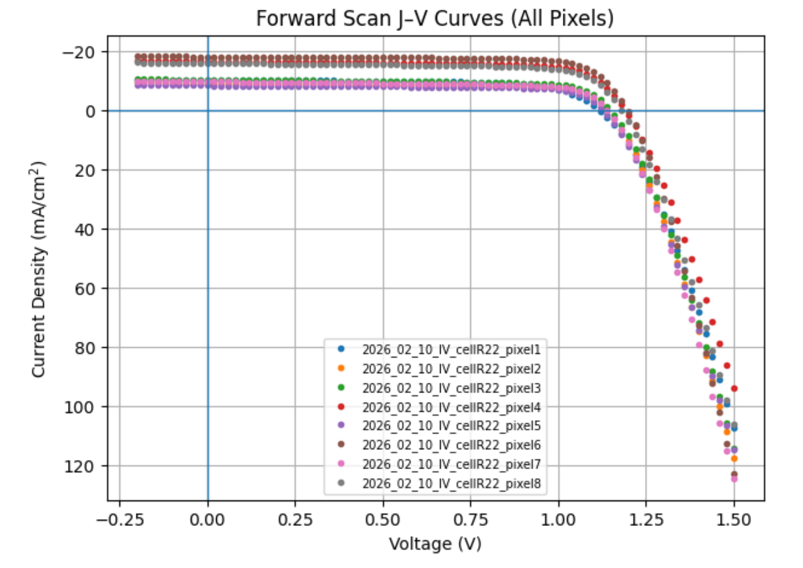
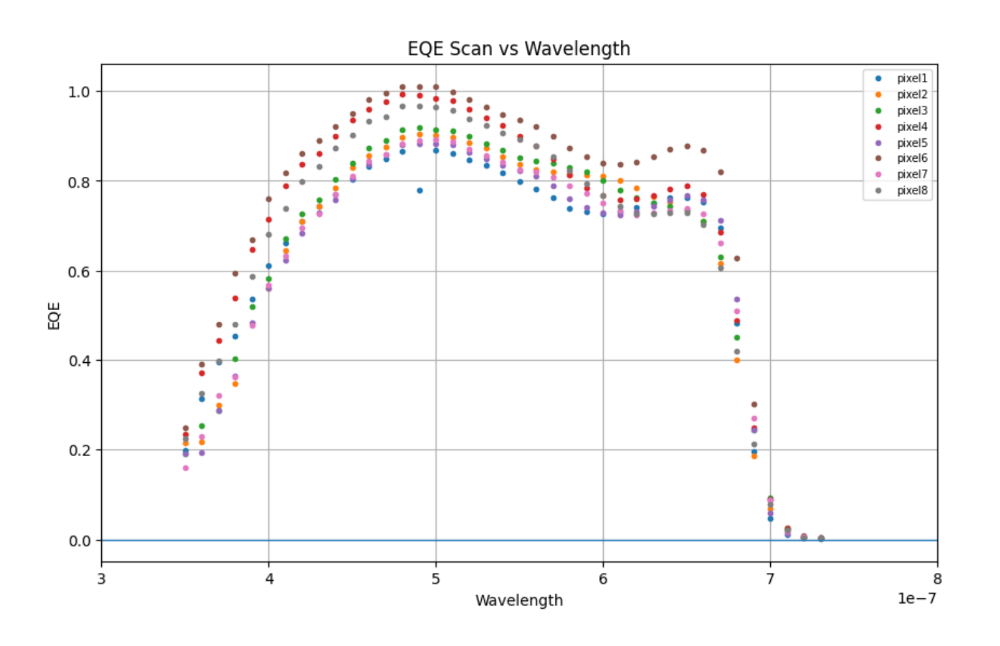
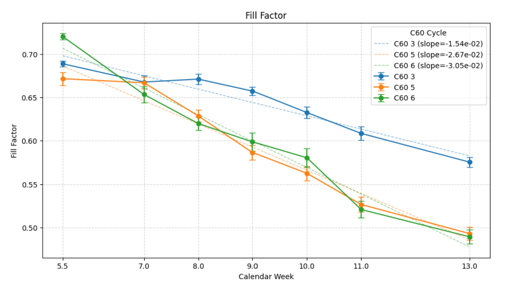
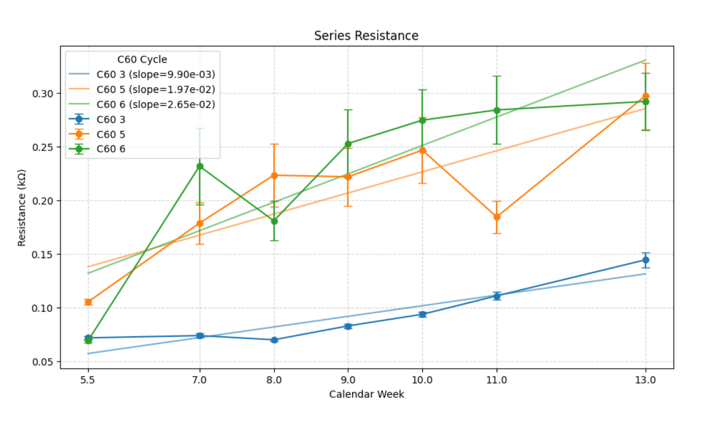
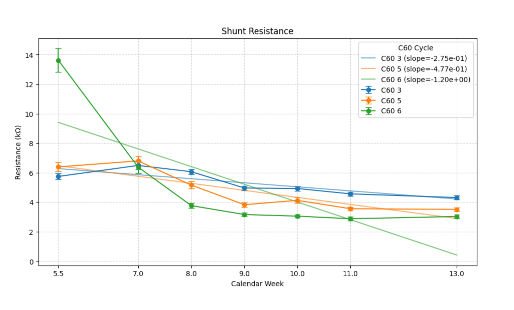

Eight weeks of experimental measurement, data pipeline engineering, and statistical analysis tracking perovskite solar cell performance degradation over time.
This was a semester-long quantum engineering lab course project conducted in Spring 2026. Working as part of a three-person team — B Team — we fabricated a perovskite solar cell and tracked its performance degradation over eight weeks of continuous light exposure, measuring current-voltage characteristics and quantum efficiency weekly.
Cell R22 — 8 pixels, 0.14 cm² active area per pixel. Input power: 99.8 mW/cm².
The central engineering question: how does a perovskite solar cell degrade over time, and can that degradation be modeled? My role was to build and own all the programming — from raw data ingestion through final statistical analysis and figures.
My teammates handled physical lab measurements and experimental procedures. I owned all programming work across the full eight-week study:
Weeks 1 and 2 established the initial performance baseline for all 8 pixels before degradation began.


Fill Factor was tracked weekly across all measurement cycles as the primary performance metric. The plots below show the degradation trend and the resistance characterization that explains the underlying mechanism.



| Notebook | Week | Description |
|---|---|---|
| DataCollection1-S26.pdf | Week 1 | Initial J-V and EQE measurements |
| EQEBaselineData-V4.ipynb | Week 2 | EQE baseline — all 8 pixels measured and compared to literature |
| DataCollection2-S26-SE.ipynb | Week 4 | J-V analysis with full uncertainty workflow; PCE and EQE tracked over time with error bars |
| DataCollection3_S26.ipynb | Weeks 5–6 | Two-week dataset; cumulative PCE vs. time and EQE subplots updated |
| DataCollection4_S26.ipynb | Week 7 | Weighted linear regression; chi-squared and residual analysis; z-test |
| DataCollection5-S26.ipynb | Week 8 | LED spectra analysis; histogram and Gaussian fitting; EQE comparison across all time points |
| Final_Project.ipynb | Final | Full resistance characterization, sigma clipping, advanced regression, summary figures |
This project taught me that rigorous scientific computing is less about the algorithms and more about the methodology — propagating uncertainty correctly, choosing the right statistical model, and knowing when your model is failing. The chi-squared analysis at week 7 was the most valuable result we produced: not because it confirmed the degradation, but because it told us our model was wrong and pointed toward a better one.
Working at the intersection of CS and physical science creates opportunities that neither field produces alone. The ability to write the data pipeline, run the statistics, and interpret the physics in the same sitting was what made this project work as a team — and it's the combination I want to keep building toward in quantum computing R&D.